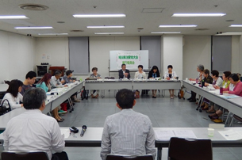

5月24日(火)13時30分より、埼玉県県民健康センター大会議室Cにて第52回埼玉県消費者大会第2回実行委員会が開催され、18人(13団体)事務局2人が出席しました。
■議題
1．事務局長から
あいさつとともに、第1回実行委員会で行った基調となる情勢の報告からの変化について報告を行いました。
2．第1回実行委員会報告(修正・追加の確認を含む)
事務局より、第1回実行委員会報告・分担金の修正案・予算の修正案を報告、確認を行いました。分担金が確認されたことを受けて、請求書の作成・分担金の受付を次回実行委員会より行うことになりました。
3．第52回大会のスローガン
第1回実行委員会での意見交換・FAXによる意見集約を受けて、スローガンについての話し合いを行い｢自ら考え行動する消費者になろう｣をメインにかかげることになりました。付随するサブスローガンについては「平和で安心してくらせる社会へ」としました。当日のカンバンやチラシでの表記については、引き続き検討を行うことになりました。
4．全体会・分科会の内容について
事務局の作成したたたき台をもとに、全体会・分科会の内容、会場の使い方を話し合い、次のことを確認しました。
- 大会当日の基本となる進行スケジュール。
- オープニングでは消費者被害防止・啓発の寸劇を実施します。現在取り組んでいる団体に参加を呼びかけます。
- 記念講演は、NPO法人ほっとプラスの藤田孝典さんに講演をいただきます。
- 分科会は映画(テーマは未定)・食・消費者課題・社会保障の4分科会で行います。
5．第2回プレ学習会のテーマ
第1回実行委員会・FAXによる意見集約を参考に第2回プレ学習会の内容について話し合いました。その結果、憲法をより理解するための学習を行うことを確認しました。
6．市町村消費者行政調査の実施概要について
第1回実行委員会で実施を確認した市町村消費者行政調査の概要について報告し、各団体からの調査依頼、実施後の懇談を呼びかけました。
7．お知らせを
 埼玉県消費者被害防止サポーター養成講座について
埼玉県消費者被害防止サポーター養成講座について
 県内消費者団体交流会について
県内消費者団体交流会について
8．お願いすること(6/10を目安に連絡を)
次回の実行委員会への出欠連絡
基調となる情勢報告に取り入れて欲しい内容
 関わる分科会の希望
関わる分科会の希望
 オープニングでの寸劇上演希望団体
オープニングでの寸劇上演希望団体